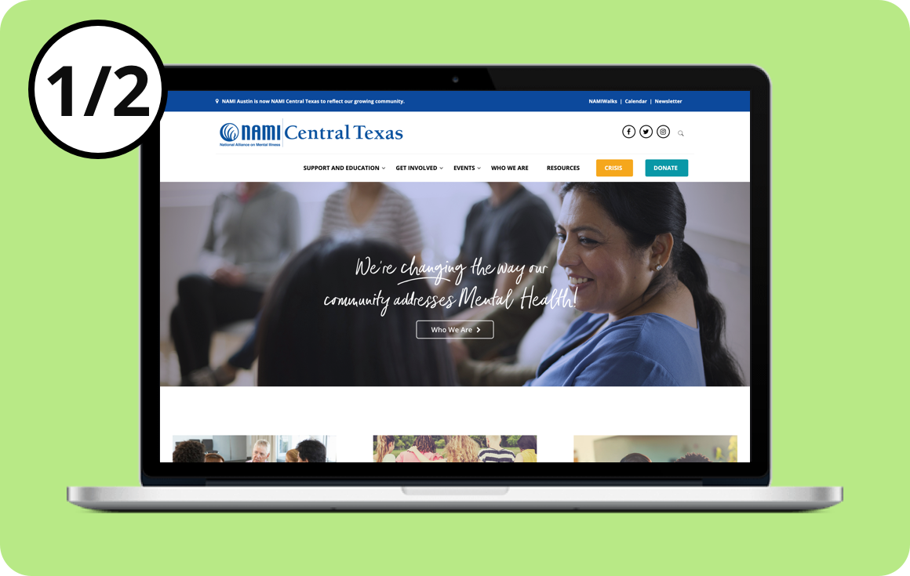

NAMI Website Redesign
A crash course in soft skills.

Overview
This project, an assignment for a UX Applied Lab class at Austin Community College, was different from other projects in one major way. This time there was a client, the National Alliance on Mental Illness (NAMI) Central Texas. Part 1 of this case study covers three soft skills I honed through this project: logistics, vital decisions, and team communication.
The Problem
The NAMI team had a deep understanding of their users and presented us with two main user problems:
- The website looked dated
- Users had trouble using the site
Investigating the first problem, a visit to the site showed that the site’s aesthetic was dated.
As for the second problem, NAMI had qualitative data: users would call and ask questions about how to use the site.
The Team
- Emilio Harrison – User Interface Design
- Janet Martin – Visual Design
- Kristi Polozoff – Research
- Osman Seyrek - Project Manager
Research
Although NAMI had some data to support their reported problems, we needed to validate them and determine the extent to which the problems existed.
Kristi designed a tree test to evaluate the navigation of the original site. This revealed an overall success rate of 60%, but why? We conducted interviews and ran card sorting sessions to identify two reasons:
- Users didn’t understand the names of the classes, workshops, and support groups
- Users couldn’t find specific things they were looking for on the site
Design
We designed a new navigation structure. Through moderated card sorting sessions we learned that users organize content by intended audience. This finding informed our final design for the information architecture and led us to take a “task then user role” approach.
Outcome
Evaluation of the project exceeded the original timeline, but I was fortunate to continue this project with another team. We ran another tree test with the new navigation. That study is still ongoing, but as of now we have seen an overall success rate of 86%.
Lessons
With this case study, I want to highlight the soft skills I learned. Although I’d worked on teams at H-E-B, this was the first time I collaborated on a design project. Unlike business, design is a creative field and in some ways much more subjective. Because of that, ‘soft’ and professional skills--like those below--came into play a lot more than I expected.
- Logistics:
Staying organized on a project
- Vital Decisions:
Realizing which decisions are life or death
- Team Communication:
Asking myself, “Is this the best way to ask this question?”
Logistics
Unlike previous projects, I was working with a client, a four-person team, research, designs, studies, work files… and more and more. I pretty quickly realized the need for organization.
This calendar event in Figure 4 illustrates that initiative. A closer look at the information demonstrates that it’s much more than just a calendar event.
- The title tells me it’s a client meeting, so I should be prepared
- The remote meeting option tells me it's not necessary to meet in person
- The guest list tells me who will be in attendance
Why is all this important? Well, in other projects, it was just me. I never created events. Why would I? No one else was joining. I learned to work in an unorganized way. It’s so easy to waste time by being confused or unprepared. With this collaborative project, I un-learned these time-wasting habits and taught myself some invaluable planning skills.
Takeaway: Stay organized and always be sure to communicate relevant details with the team.
Vital Decisions
On a team it’s important to determine which decisions are vital and which aren’t. In other words, not every decision is life or death for the project. I have a tendency to make a decision and stick to it, but I realized that having that approach to every single decision isn’t the best for two reasons. First, like anyone’s, my first instincts are of course not always right. Furthermore, not every decision has high stakes for the project.
For example, I designed the top sample and was originally determined that that was the only way it was going to look. Another team member designed an alternative, the bottom image, but I wouldn’t budge.
Finally, at some point it clicked. This isn’t a vital decision. The other design isn’t wrong. It just wasn’t my idea. Let’s go with it. I remembered that the team shares my goal to deliver a great design, and that they are just as passionate about this project as I am. I learned to trust that they are doing what they think is best.
My takeaway: If something doesn’t directly affect our user’s goal, then it isn’t vital. If it isn’t vital and the other person’s idea isn’t clearly wrong, then compromising is more productive than stressing.
Team Communication
Ok, I’ll admit this lesson was a hard one learned. I stressed over this alot. I think the best way to talk about this is going straight into an example.
Consider the Slack message below[1]. Slack is an app which teams can quickly communicate with each other and share files.
At the start of the project I defaulted to Slack for all communication, thinking “Hey, I’m gonna use this Slack thing so I can be cool and it’s just super easy.” What you see in the screenshot is an example of a message I sent early on. I asked for feedback, I sent an image of a design, and I asked for a ton of specific points and questions. The problem is that this is not the best way to have this conversation.
After realizing that how I communicated wasn’t working, here is what my messages turned into.
It’s a simple request to jump on a call for a feedback session, with a link included.I thought Slack failed me in a major way, but I realized I hadn’t really asked myself if I was using it the right way. Moving forward, I was more thoughtful in matching the medium of the conversation with its goals, and the team was able to communicate more effectively and get things done.
My takeaway: Be aware of what it is that you want to communicate to the team and the best medium to do so, not just the most convenient.
Conclusion
I initially went into this project like other projects I’ve worked on at my job, HEB, but I quickly realized that business approach wasn’t the most effective. Because of the subjective nature of design I got a crash course in ‘soft’ skills. The team was successful in delivering the project to the client and even exceeded their expectations. As a plus I learned 3 key takeaways:
- Stay organized and always be sure to communicate relevant details with the team
- If something doesn’t directly affect our user’s goal, then it isn’t vital. If it isn’t vital and the other person’s idea isn’t clearly wrong, then compromising is more productive than stressing.
- Be aware of what it is that you want to communicate to the team and the best medium to do so, not just the most convenient
Feedback
Share your thoughts, questions, or ideas.
feedback-case-study@emilioharrison.com
(512) 957-1536